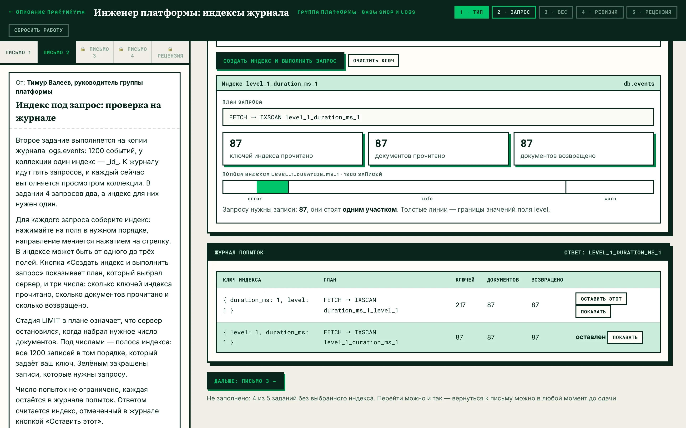
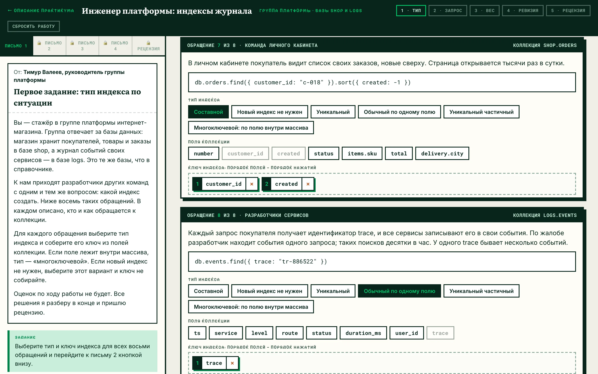
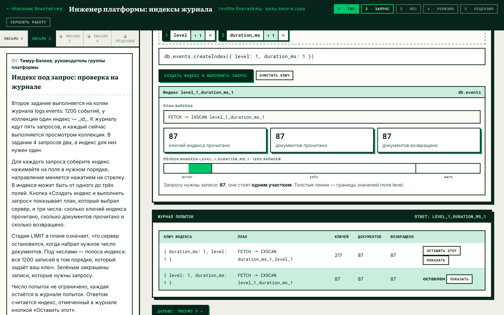
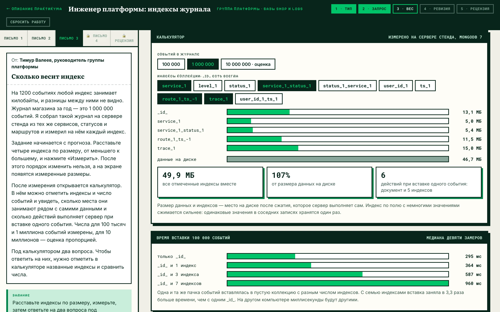
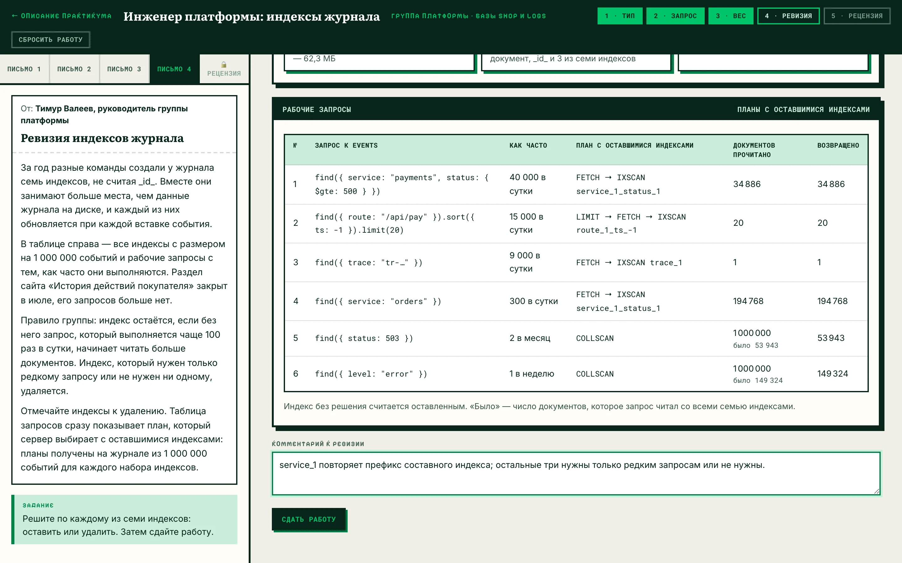
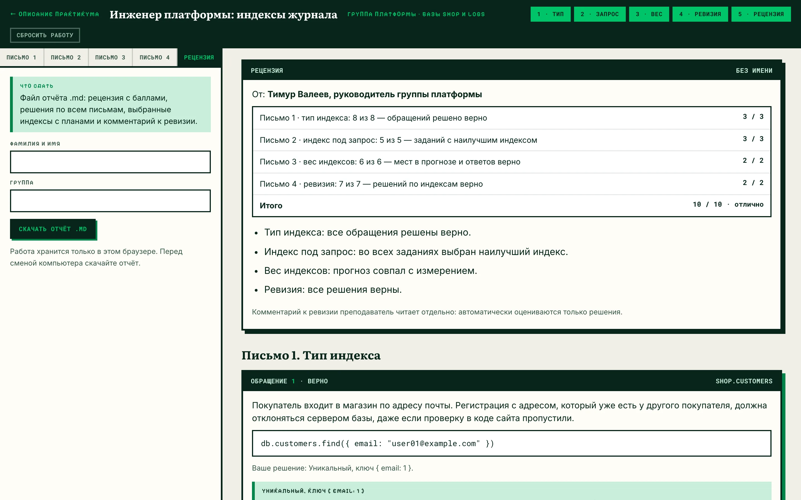

Справочник по MongoDB · модуль 3 · практикум
ПРАКТИКУМ
Инженер платформы:
индексы журнала
Ролевой практикум по индексам MongoDB. Студент работает стажёром в группе платформы интернет-магазина: выбирает тип индекса по описанию задачи, подбирает индекс под запрос и проверяет его по плану сервера, сравнивает размеры индексов на миллионе событий и проводит ревизию индексов журнала. В конце руководитель группы присылает рецензию.

§1Легенда
Интернет-магазин хранит покупателей, товары и заказы в базе shop, а журнал событий своих сервисов — в базе logs. Это базы стенда курса, на них построены главы справочника. За базы отвечает группа платформы: к ней приходят разработчики других команд, когда запрос выполняется медленно или в коллекции появляются повторы.
Студент — стажёр этой группы. Задания приходят письмами от руководителя: четыре письма, в каждом своя работа с индексами.
Магазин, группа платформы и её сотрудники придуманы для практикума. Данные взяты со стенда курса без изменений.
Выбирает и проверяет индексы, измеряет их размер, решает, какие индексы журнала удалить.
Присылает четыре письма с заданиями и в конце — рецензию с баллами.
Вход и регистрация, личный кабинет, склад, служба поддержки, дежурный инженер, аналитик. От них восемь обращений в письме 1.
1200 событий в письме 2 и 1 000 000 событий в письмах 3 и 4. Поля, сервисы, статусы и маршруты те же, что в главе 3.2.
§2Навыки по письмам
В главе 3.2 индекс для каждого примера назван в тексте. В работе индекс выбирает инженер: по описанию задачи, по тексту запроса и по тому, как часто запрос выполняется. Каждое письмо практикума отрабатывает один такой выбор.
По обращению команды определить, нужен ли индекс и какой: обычный, составной, уникальный, частичный или многоключевой.
Собрать ключ индекса, выполнить запрос и прочитать план: какие стадии выбрал сервер, сколько ключей и документов прочитал.
Предсказать, какой индекс занимает больше места, и сверить прогноз с измерением на 1 000 000 событий.
По списку запросов и их частоте решить, какие из семи индексов журнала оставить.
Во время работы баллы не показываются. Рабочий стол выводит план запроса и числа сервера, а подходит ли индекс, студент определяет по ним сам. Баллы и разбор всех заданий появляются после сдачи, в рецензии. Так же устроен практикум «Аналитик данных: первая неделя» модуля 2.
§3Четыре письма
Следующее письмо открывается кнопкой «Дальше» внизу текущего. Переход не зависит от ответов в предыдущем письме. До сдачи к любому открытому письму можно вернуться и поменять ответ.
Тип индекса по ситуации
Восемь обращений от команд магазина. В карточке — кто обращается, как он работает с коллекцией и текст запроса.
- тип индекса — один из шести вариантов, среди них «новый индекс не нужен»;
- ключ индекса — поля коллекции в нужном порядке;
- коллекции:
shop.customers,shop.orders,logs.events.

Индекс под запрос
Пять заданий на журнале из 1200 событий: условие с диапазоном, сортировка с пределом, два условия с сортировкой, два запроса под один индекс и запрос, в котором есть только сортировка. Ключ индекса собирается нажатиями на поля: от одного до трёх полей, у каждого направление 1 или -1. Кнопка «Создать индекс и выполнить запрос» показывает:
- план, который выбрал сервер: стадии
COLLSCAN,IXSCAN,FETCH,SORT,LIMIT; - три числа: ключей прочитано, документов прочитано, документов возвращено;
- полосу индекса — ту же схему, что в главе 3.2, §3: все 1200 записей в порядке ключа, нужные запросу закрашены.
Каждая попытка остаётся в журнале попыток, их число не ограничено. Ответом считается индекс, отмеченный кнопкой «Оставить этот».

Сколько весит индекс
Сначала прогноз: четыре индекса расставляются по размеру на журнале из 1 000 000 событий. Кнопка «Измерить» закрепляет порядок и показывает измеренные размеры.
После измерения открывается калькулятор. В нём отмечаются индексы и число событий — 100 тысяч, 1 миллион или 10 миллионов. Калькулятор показывает размер каждого индекса рядом с размером данных, общий размер и число действий сервера при вставке одного события. Ниже — время вставки 100 000 событий при одном, двух, четырёх и восьми индексах.
Под калькулятором два вопроса. Чтобы ответить, нужно отметить в калькуляторе названные индексы и сравнить числа.

Ревизия индексов журнала
У журнала из 1 000 000 событий семь индексов, созданных разными командами. Рядом — шесть рабочих запросов и частота каждого. По правилу группы индекс остаётся, если без него частый запрос начинает читать больше документов.
По каждому индексу принимается решение «оставить» или «удалить». Таблица запросов сразу показывает план с оставшимися индексами и число прочитанных документов, плитки сверху — общий размер индексов и число действий при вставке.

Рецензия
Кнопка «Сдать работу» в письме 4 закрывает ответы и открывает рецензию: баллы по четырём письмам, итог и разбор каждого задания. В разборе письма 2 рядом стоят индекс студента и наилучший индекс с их планами и полосами.

§4Откуда взяты числа
Сервер MongoDB для практикума не нужен: рабочий стол показывает результаты, заранее полученные на сервере стенда курса, MongoDB 7.
| Письмо | Что показано | Как получено |
|---|---|---|
| 2 | План и три числа для любого индекса из одного–трёх полей | На копии logs.events создан каждый из 931 возможных индексов, и для каждого выполнены шесть запросов пяти заданий методом explain("executionStats") |
| 3 | Размеры индексов и данных | Собран журнал из 100 000 и из 1 000 000 событий с теми же сервисами, уровнями, маршрутами и статусами; размеры прочитаны из статистики коллекции |
| 3 | Время вставки 100 000 событий | Одна и та же пачка событий вставлена в пустую коллекцию с разным числом индексов, девять раз для каждого набора; показана медиана |
| 4 | Планы шести запросов для любого набора индексов | На журнале из 1 000 000 событий для каждого из 128 наборов лишние индексы скрыты от планировщика, и запросы выполнены методом explain |
Размеры для 10 000 000 событий в калькуляторе — оценка пропорцией от измерения на 1 000 000. Время вставки зависит от компьютера: на другом сервере миллисекунды будут другими.
Индекс из письма 2 можно создать на своём стенде в песочнице и сверить план: числа совпадут.
§5Рецензия и оценка
Баллы рецензия считает по шкале ниже. Комментарий к ревизии преподаватель читает отдельно: автоматически оцениваются только решения.
| Письмо | Что считается | Баллы |
|---|---|---|
| 1 · тип | Верно решены обращения (тип и ключ): 7–8 — 3 балла, 5–6 — 2, 3–4 — 1 | 3 |
| 2 · запрос | Выбран наилучший индекс: 5 заданий — 3 балла, 4 — 2, 2–3 — 1 | 3 |
| 3 · вес | Индексы на своих местах в прогнозе и верные ответы, всего 6: 5–6 — 2 балла, 3–4 — 1 | 2 |
| 4 · ревизия | Верные решения по индексам: 7 — 2 балла, 5–6 — 1 | 2 |
| Итого | 10 | |
Наилучший индекс в письме 2 — индекс, с которым запрос читает столько ключей и документов, сколько возвращает, выполняется без стадии SORT и в котором нет лишних полей.
Перевод в оценку: 9–10 баллов — «отлично», 7–8 — «хорошо», 5–6 — «удовлетворительно».
Что сдать: на вкладке «Рецензия» укажите фамилию, имя и группу и скачайте файл indeksy_<фамилия>.md. В нём рецензия с баллами, решения по всем письмам, выбранные индексы с планами и комментарий к ревизии.
§6Вопросы
Можно ли пройти практикум дома?
Да. Рабочий стол открывается в любом браузере, сервер не нужен. Работа хранится в том браузере, где её начали: на другом компьютере она не появится. Перед сменой компьютера сдайте работу и скачайте отчёт.
Что будет, если закрыть вкладку?
Ответы и журнал попыток сохраняются при каждом изменении и появляются снова при следующем открытии рабочего стола в том же браузере.
Можно ли переделать работу после сдачи?
Нет, после сдачи ответы закрыты. Сбросить работу может только преподаватель — кнопкой «Сбросить работу» с паролем.
Снижается ли оценка за лишние попытки в письме 2?
Нет. Оценивается индекс, который оставлен ответом. Число попыток записывается в отчёт, на баллы оно не влияет.
Какие главы повторить перед практикумом?
Главу 3.2 «Индексы: одиночные, составные, уникальные»: порядок полей составного индекса и префикс — §3, стадия SORT — §4, уникальный и частичный индексы — §5–§7, цена индекса — §8.